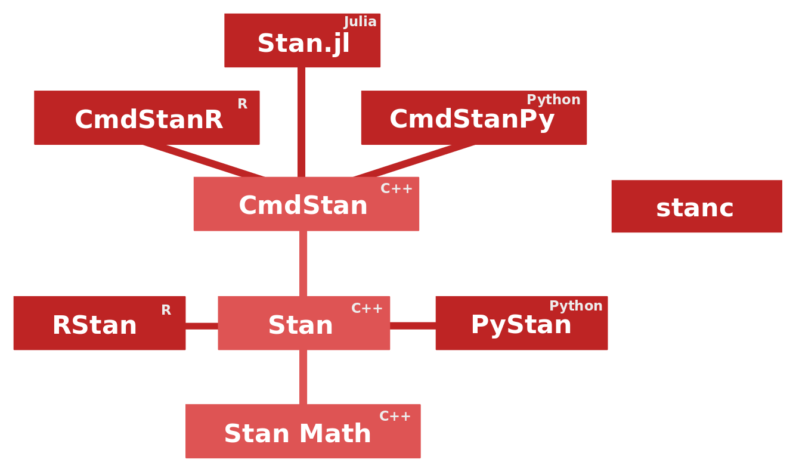

library(cmdstanr)
model <- cmdstan_model(stan_file = "mymodel.stan")
fit <- model$sample(adapt_delta = 0.95, refresh = 100)Understanding the Stan codebase - Part 1: Finding an entry point
Stan, C++
Overview of the different libraries related to Stan and their organization, and finding and entry point to the internal C++ code.
Keywords
Stan, C++
1 Introduction
So, you have your Stan model written and are doing inference for it, but something weird is happening? Or maybe you want to extend Stan but don’t know where to start because the source code repositories look daunting. These are some of the possible reasons why someone might want to study the internals of Stan, and what is happening under the hood. I have for various reasons for a long time wanted to just see what is happening line-by-line. In this post, I am going to look at how a typical program execution starts to travel through all the different libraries related to Stan, using CmdStanR as the starting point.

Relationships between different libraries and various interfaces related to Stan are visualized in the above diagram. The C++ core that we study in this post is organized into three parts.
- CmdStan: A command-line interface to Stan
- Stan: The MCMC and optimization algorithms
- Stan Math: Mathematical functions and their gradients (automatic differentiation)
Many higher-level interfaces, like CmdStanR and CmdStanPy, call CmdStan internally. RStan and PyStan employ different strategies that do not rely on CmdStan. A benefit of CmdStan is that it is always released simultaneously with Stan with the same version number, which means that CmdStan is always up to date. In this, post we study the most recent Stan version 2.28.2, and if the source code structure doesn’t experience dramatic changes in the near future, this post might stay relevant for future versions too.
2 Starting point (CmdStanR)
In the very beginning, we have nothing but our Stan code, in a file called mymodel.stan. For simplicity, we assume that it doesn’t have a data block, but otherwise we are not interested in what the model actually is like. We investigate what happens when we run the following R code:
2.1 Creating the executable
The first thing we look at is cmdstan_model(stan_file = "mymodel.stan"). This does two interesting things.
- Transpiles the Stan model to C++ code using stanc3
- Compiles the C++ code into an executable file mymodel.exe (without the .exe file suffix on Mac or Linux).
We could have used model$save_hpp_file() to save the model C++ code into mymodel.hpp if we wanted to look at that. However, we are now interested in the C++ code that doesn’t depend on the model. I would imagine that also a lot of this model-independent code has to go into the executable.
2.2 Running the executable
The call model$sample(adapt_delta = 0.95, refresh = 100) creates four processes (because the default number of chains is four) that each run the executable. For example, the first process creates the command-line call
mymodel.exe id=1 random seed=660816326 output file=<opath>.csv refresh=100 profile_file=<ppath>.csv method=sample save_warmup=0 algorithm=hmc engine=nuts adapt delta=0.95 engaged=1where <opath> and <ppath> are paths to some temporary CSV files on the computer. Arguments delta=0.95 and refresh=100 are things that we specified and others are defaults created by CmdStanR. You can find explanations for the command-line arguments in the CmdStan User’s Guide.
For other processes the id argument is 2, 3, and 4. From now on we study only one chain (the one with id=1) and next try to find the entry point in the CmdStan code that is started with the above command-line instruction.
3 CmdStan
Inside the cmdstan source code repository, we go to cmdstan/src/cmdstan.
3.1 main.cpp
We find a main.cpp, which looks promising. It actually includes an
int main(int argc, const char *argv[]) {
// ...
}function which is the starting point of any C++ program. Based on our command line arguments, at this point argc (number of command line arguments) should be 15, argv[0] should be "mymodel.exe", argv[1] should be "id=1" and so on. We see that main just calls cmdstan::command(argc, argv), which is defined in command.hpp.
3.2 command.hpp
Inside the command() function is a huge if-else parade which is quite difficult to read. So here is a high-level summary of the control flow inside it.
int command(int argc, const char *argv[]) {
// ... parse the arguments
// ... initialize model
// ... initialize writers
if (user_method->arg("generate_quantities")) {
// ...
} else if (user_method->arg("diagnose")) {
// ...
} else if (user_method->arg("optimize")) {
// ...
} else if (user_method->arg("sample")) {
// ...
if (model.num_params_r() == 0 || algo->value() == "fixed_param") {
// ...
} else if (algo->value() == "hmc") {
// ...
if (adapt_engaged == true && num_warmup == 0) {
// ... error
} else if (engine->value() == "nuts" && metric->value() == "dense_e"
&& adapt_engaged == false && metric_supplied == false) {
// ...
} else if (engine->value() == "nuts" && metric->value() == "dense_e"
&& adapt_engaged == false && metric_supplied == true) {
// ...
} else if (engine->value() == "nuts" && metric->value() == "dense_e"
&& adapt_engaged == true && metric_supplied == false) {
// ...
} else if (engine->value() == "nuts" && metric->value() == "dense_e"
&& adapt_engaged == true && metric_supplied == true) {
// ...
} else if (engine->value() == "nuts" && metric->value() == "diag_e"
&& adapt_engaged == false && metric_supplied == false) {
// ...
} else if (engine->value() == "nuts" && metric->value() == "diag_e"
&& adapt_engaged == false && metric_supplied == true) {
// ...
} else if (engine->value() == "nuts" && metric->value() == "diag_e"
&& adapt_engaged == true && metric_supplied == false) {
// ... WE END UP HERE
return_code = stan::services::sample::hmc_nuts_diag_e_adapt(
model, num_chains, init_contexts, random_seed, id, init_radius,
num_warmup, num_samples, num_thin, save_warmup, refresh, stepsize,
stepsize_jitter, max_depth, delta, gamma, kappa, t0, init_buffer,
term_buffer, window, interrupt, logger, init_writers,
sample_writers, diagnostic_writers);
} else if (engine->value() == "nuts" && metric->value() == "diag_e"
&& adapt_engaged == true && metric_supplied == true) {
// ...
} else if (engine->value() == "nuts" && metric->value() == "unit_e"
&& adapt_engaged == false) {
// ...
} else if (engine->value() == "nuts" && metric->value() == "unit_e"
&& adapt_engaged == true) {
// ...
} else if (engine->value() == "static" && metric->value() == "dense_e"
&& adapt_engaged == false && metric_supplied == false) {
// ...
} else if (engine->value() == "static" && metric->value() == "dense_e"
&& adapt_engaged == false && metric_supplied == true) {
// ...
} else if (engine->value() == "static" && metric->value() == "dense_e"
&& adapt_engaged == true && metric_supplied == false) {
// ...
} else if (engine->value() == "static" && metric->value() == "dense_e"
&& adapt_engaged == true && metric_supplied == true) {
// ...
} else if (engine->value() == "static" && metric->value() == "diag_e"
&& adapt_engaged == false && metric_supplied == false) {
// ...
} else if (engine->value() == "static" && metric->value() == "diag_e"
&& adapt_engaged == false && metric_supplied == true) {
// ...
} else if (engine->value() == "static" && metric->value() == "diag_e"
&& adapt_engaged == true && metric_supplied == false) {
// ...
} else if (engine->value() == "static" && metric->value() == "diag_e"
&& adapt_engaged == true && metric_supplied == true) {
// ...
} else if (engine->value() == "static" && metric->value() == "unit_e"
&& adapt_engaged == false) {
// ...
} else if (engine->value() == "static" && metric->value() == "unit_e"
&& adapt_engaged == true) {
// ...
}
}
} else if (user_method->arg("variational")) {
// ...
}
// ...
return return_code;
}In most of the branches, the left-out part // ... ends up calling something from stan::services. This is also the case in our example, and because our method argument is sample,the default algorithm is NUTS with adaptation engaged and the default metric is diagonal (and we haven’t supplied the metric), we will call stan::services::sample::hmc_nuts_diag_e_adapt(). We will therefore now jump from CmdStan to Stan. Hooray!
4 Stan
Inside the stan source code repository, we go to stan/src/stan.
4.1 hmc_nuts_diag_e_adapt.hpp
In services/sample we find hmc_nuts_diag_e_adapt.hpp which contains the function that we called from CmdStan. But wait, it is actually overloaded with four different versions of it with the same name. Not to mention each of these are templated. We will not stop here to think much about why these all versions of hmc_nuts_diag_e_adapt() are needed. A very valid print debugging approach reveals that in our case, we call the fourth one, which calls the second one, which then calls the first one. There we have
std::vector<double> cont_vector = util::initialize(
model, init, rng, init_radius, true, logger, init_writer);where the parameter values are initialized. In initialize(), which is defined in initialize.hpp, we try most 100 random initial points, until a point where log probability and its gradient can be evaluated successfully. In our case the first try is successful. Therefore we can now think that we exist somewhere in the (unconstrained) parameter space, at a point stored in cont_vector. The next step is to call
util::run_adaptive_sampler(
sampler, model, cont_vector, num_warmup, num_samples, num_thin, refresh,
save_warmup, rng, interrupt, logger, sample_writer, diagnostic_writer);which we will look at next.
4.2 run_adaptive_sampler.hpp
So we are now at run_adaptive_sampler.hpp which is in services/util. There we have three interesting parts.
- Initializing stepsize
- Generating transitions, adaptation engaged (warmup)
- Generating transitions, adaptation disengaged (sampling)
The part
sampler.init_stepsize(logger)initializes the stepsize and is defined in mcmc/hmc/base_hmc.hpp. This already involves a bit of Hamiltonian computations and evolving the Leapfrog integrator. After this, we start to actually generate MCMC transitions using the sampler. This is done in two phases with calls to
util::generate_transitions();and in the first one we have adaptation engaged. We will look at generate_transitions() in the next blog post. Spoiler alert: sampler.init_stepsize() will be called there again so we will also look at it more.
5 Resources
I have forks of CmdStan and Stan that print more verbose information about the program status than normally.